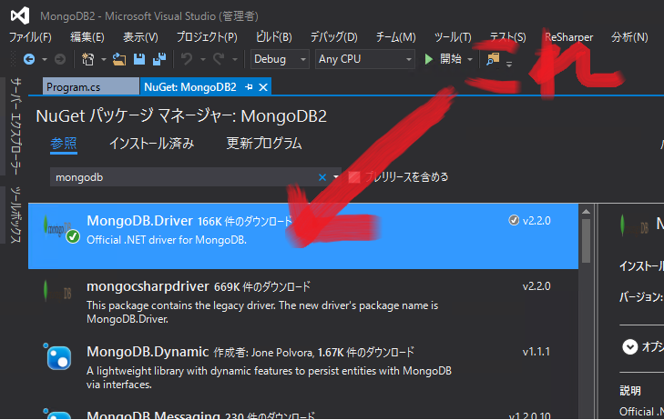
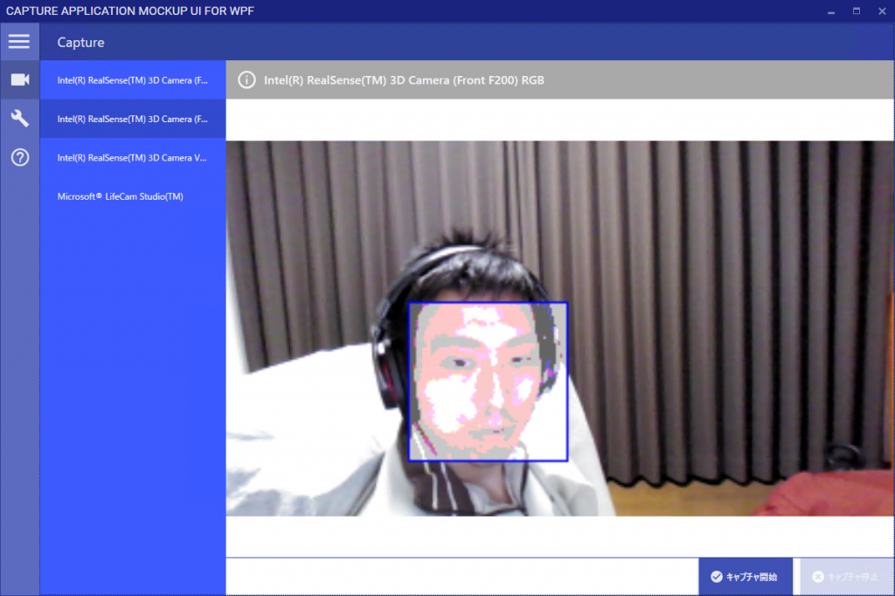

難読化の話が一区切りついてすらいないのに新しい記事を書く男の人って…
Introduction
仕事で画像処理を本格的にやる必要に駆られています。 アフィン変換とか、画像の描画などは普通に業務で使うことが非常に多く、**.NET** の System.Drawing 名前空間を使って、そつなくこなすのですが、ことは C++ となると話は別。 メモリ確保とか色々面倒だし、何よりロジックに注力することよりも、コードを書くことそのものに気をとられてげんなりするわけです。 で、話を戻すと、画像処理のその仕事は C++ を使うのですが、 OpenCV を使って、検証して、必要ならば純粋な C++ にポーディングする作業とのこと。 つまり、検証作業をするのに OpenCV で何ができて、何がダメなのかを理解する必要があります。 とはいえ、C++ でごりごりコードを書くのは勘弁願いたいわけです。 なので、OpenCV の勉強は .NET のラッパーライブラリを使って行うことにします。 先人の方々が既に説明されていますが、OpenCV のラッパーライブラリは、調べた限り、5 つあります。
OpenCvSharp
Emgu CV
OpenCV.NET
OpenCVLib
OpenCV .NET Wrapper
公式ページ。 このうち、上2つが一番活発だと思いますが、特に、OpenCvSharp は日本人の方がリードしているため、非常に安心です。 そのため、これをベースに勉強していきます。
Explanation
OpenCV は非常に多くの画像処理機能が含まれています。フィルター処理、行列演算、ラベリング、物体検出、機械学習、カメラ入力等々。 現在、バージョン3が開発されていますが、2.4系が安定版として、広く利用されています。 事実、OpenCvSharp も2.4系がメインで、3はアルファ版のようです。私も2.4系を使い、最新版は2.4.10 OpenCvSharpの良いところは、NuGet 経由でインストールが全て完結する点にあります。 ラッパーdllはもちろん、OpenCVに含まれている、opencv_core2410.dll 等のネイティブdll が x86 と x64 の両方が同時にインストールされる親切設計。流石日本製。 ただ、気をつけて欲しいのは、NuGetで検索すると、同じ名前のものがあって、どっちが正しいのかわかりづらい点にあります。 同じ名前のパッケージがNuGetで見つかります。片方は、ネイティブdllがインストールされないため、実行時にエラーが出ます。 …えぇ、私は罠にかかりました。  < div style=”clear:both;”> インストールするのは、女性のアイコン (OpenCVの世界でおなじみの Lenna さん) の描かれたパッケージを選んでください。 長々書きましたが、最初は顔検出が簡単にできることを示します。 [code lang=”csharp”] private readonly CvHaarClassifierCascade _Cascade = CvHaarClassifierCascade.FromFile(@”haarcascade_frontalface_default.xml”);
private BitmapSource DetectFace(Bitmap bitmap) { var colors = new[]{ new CvColor(0,0,255) };
const int minNeighbors = 2; const int minSize = 50; const int maxSize = 100;
using (var img = bitmap.ToIplImage()) using (var smallImg = new IplImage(new CvSize(img.Width, img.Height), BitDepth.U8, 1)) { // Enhancement image to detect face using (var gray = new IplImage(img.Size, BitDepth.U8, 1)) { Cv.CvtColor(img, gray, ColorConversion.BgrToGray); Cv.Resize(gray, smallImg, Interpolation.Linear); Cv.EqualizeHist(smallImg, smallImg); }
using (var storage = new CvMemStorage()) { storage.Clear();
// Detect face var faces = Cv.HaarDetectObjects( smallImg, this._Cascade, storage, 1.05, minNeighbors, HaarDetectionType.FindBiggestObject, new CvSize(minSize, minSize), new CvSize(maxSize, maxSize));
// Draw circle for detected area for (var i = 0; i < faces.Total; i++) { var r = faces[i].Value.Rect;
img.SetROI(r); var s = 0.01; img.Scale(img, s, s); img.Scale(img, 1 / s, 1 / s); img.ResetROI();
img.Rectangle(r.X, r.Y, r.X + r.Width, r.Y + r.Height, colors[0]); } }
return img.ToWriteableBitmap(); } } [/code] 上のコードのメソッドの引数bitmapに人間の顔が写った画像を渡すと顔の部分に青の枠線が描画され、その中身がぼやけさせる結果の画像を返します。 下記にポイントを書きます。
{kind=link}
1. パラメータファイルが使えない
顔検出は、パラメータファイルを OpenCV のGitHub から持ってきたのですが、各種のブログサイトにあるように、 https://github.com/Itseez/opencv/blob/master/data/haarcascades/haarcascade_frontalface_default.xml を持ってきて、実行フォルダにコピーしても動きません。 こっちではなく、haarcascades_cuda というフォルダ内の下記の同名ファイルを使ってください (少なくとも、2.4.10では)。 https://github.com/Itseez/opencv/blob/master/data/haarcascades_cuda/haarcascade_frontalface_default.xml
2. 前処理
// Enhancement image to detect face というコメントがありますが、引数に渡した画像のコピー、つまり顔検出させる対象にエフェクトをかけています。 (エンハンス処理と私は好んで言っています) エンハンスをすることによって、顔検出がしやすいようにします。 例えば、全体的に暗い画像を明るくし、コントラストを調整することで、顔などをくっきりさせて検出しやすくします。 こういう前処理は非常に重要です。画像サイズを縮小して、高速化したりすることもあります。
3. 画像中の顔のサイズの調整
顔検出は万能ではありません。 何が言いたいかというと、画像の中の顔のサイズがある程度わかっている必要がある、ということです。 コード中の Cv.HaarDetectObjects メソッドの最後の2つの引数は、推定される顔の最小・最大サイズを指定します。 すなわち、画像中のオブジェクトで、顔と思しきオブジェクトの大きさは、この範囲内に含まれる必要があります。 範囲を広くすると、顔ではないものが検出されて精度が落ちます。 このあたりの挙動は、HaarDetectionType.FindBiggestObject を変えると面白いです。 以上を踏まえて、カメラを使ってリアルタイムに検出した結果がこちら。 (カメラもOpenCVが提供しています。)  < div style=”clear:both;”> 今回はここまで。
{kind=link}